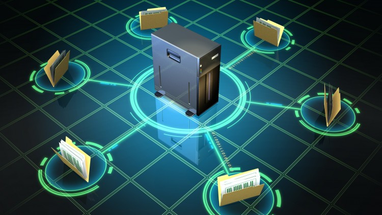

Dans ce projet, nous devions concevoir un réseau complet de A à Z pour l'entreprise fictive Alt-B-SUD. Le travail consistait à construire une infrastructure cohérente entre plusieurs sites, en assurant l'interconnectivité, la sécurité et l'accès aux services nécessaires.
Nous avons travaillé sur une architecture plus avancée qu'un simple réseau local : segmentation des zones, routage entre les réseaux, services serveurs, zone DMZ, accès sécurisés et mise en place de VPN IPsec pour relier les sites distants.
L'objectif était de proposer une solution réaliste, organisée et exploitable à partir des consignes fournies. Ce projet m'a permis de consolider mes compétences en architecture réseau, en sécurité, en configuration d'équipements et en documentation technique.